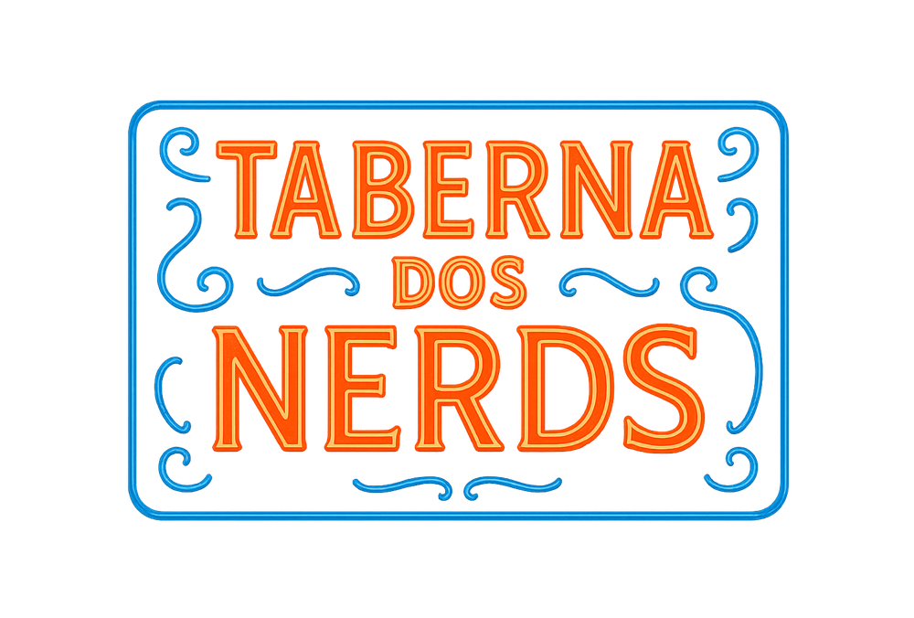

Taberna aberta · entrada franca
Puxa a
cadeira,
nerd.
Anime, game, RPG, quadrinho e teoria maluca de série — com gente que fala a sua língua e ninguém pra explicar a piada.
+ de 4 mil nerds já puxaram a cadeira
Entrar na TabernaClica, responde 2 perguntas rápidas e tá dentro.
Grupo no Facebook · grátis · sem treta
- Anime & mangá
- Games
- RPG de mesa
- Quadrinhos
- Sci-fi & fantasia
- Cultura pop
O que serve na casa
-
Papo sem julgamento
Gosto duvidoso é bem-vindo. Gatekeeping fica na porta.
-
Indicação que presta
Do anime da temporada ao clássico que você nunca viu.
-
Mesa cheia todo dia
Meme de manhã, debate à tarde, spoiler bloqueado sempre.
Outras mesas da casa
Já é da Taberna? Os salões vizinhos também tão abertos.
Conheça a ADM Emília
Quem mantém a casa de pé. Chega junto nas redes dela.